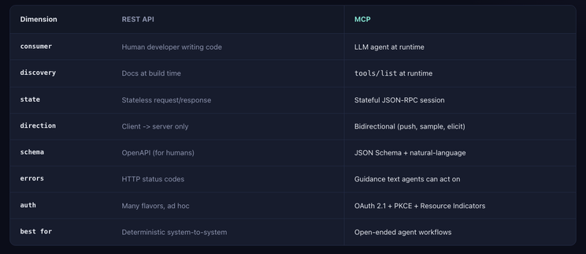

MCP Is Not Just REST for AI
One of the fastest ways to misunderstand MCP is to describe it as "REST for AI agents."
That sounds convenient, but it misses the point.
REST and MCP solve different problems for different consumers.
REST is usually designed for developers writing deterministic code. MCP is designed for models choosing actions at runtime.

REST Is for Known Calls
REST works beautifully when the caller already knows what it wants to do.
For example:
- A mobile app gets a user's profile.
- A backend job syncs invoices.
- A service creates a payment.
- A dashboard fetches analytics.
The developer reads API docs, writes code, handles errors, and ships a fixed call sequence.
The API is consumed at build time by a human developer.
MCP Is for Agent Workflows
An agent often does not know the exact call sequence in advance.
It receives a user request, inspects available tools, decides what to call, reads results, and then decides what to do next.
That means the integration needs more than endpoints.
It needs:
- Runtime discovery
- Model-friendly tool descriptions
- JSON schemas
- Guidance-rich errors
- User consent flows
- Notifications and callbacks
- Context-aware responses
MCP is shaped around that loop.
Discovery Is a Big Difference
With REST, discovery usually happens when a developer reads documentation.
With MCP, discovery happens at runtime through calls such as tools/list, resources/list, and prompts/list.
The model can be given the available capabilities as part of its working context.
That changes how you design the interface. Tool names and descriptions become part of the product.
Error Messages Need to Help the Model
A REST API can return:
{ "error": "403 Forbidden" }That might be enough for a developer who can inspect logs and documentation.
For an agent, it is often too thin.
A better MCP error might say:
Permission denied. This action requires the repo:write scope. Ask the user to reconnect GitHub with write access before retrying.That message gives the model the next step.
MCP Usually Sits on Top of APIs
MCP does not replace REST.
In many systems, the MCP server calls existing REST or GraphQL APIs under the hood. The difference is that it exposes an agent-friendly surface on top.
Instead of mirroring every endpoint, a good MCP server exposes workflow-shaped tools.
For example, instead of forcing the model to call:
- list_customers
- get_customer
- list_orders
- get_order
- refund_order
You might expose:
- find_refundable_order
- refund_damaged_order
The MCP tool can call multiple APIs internally and return one clear result.
When to Use Each
Use REST when the caller is human-written code with a known sequence.
Use MCP when an agent needs to choose among capabilities at runtime.
Keep REST as the system of record. Use MCP as the agent-facing layer.
The Takeaway
REST is excellent for deterministic system-to-system calls.
MCP is built for open-ended agent workflows where discovery, context, consent, and tool selection matter.
Full knowledge base: https://sagartrivedi.dev/learn-mcp/
Originally published on LinkedIn.